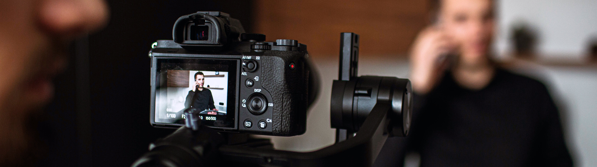
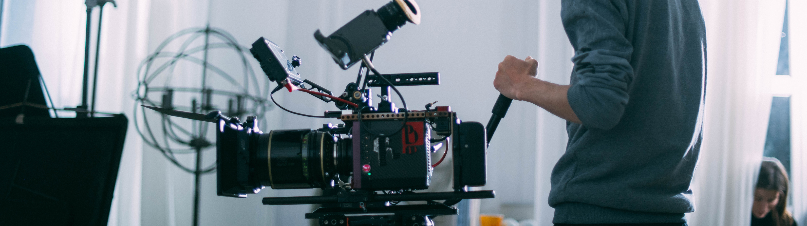

Überprüfe den Ladezustand der Batterien und lade sie vollständig auf. Achte darauf, Ersatzbatterien bereitzuhalten. Kontrolliere den verfügbaren Speicherplatz auf den Speicherkarten und habe zusätzliche Karten griffbereit. Reinige das Objektiv und den Kamera-Sensor, um Staub oder Schmutz zu entfernen, die die Bildqualität beeinträchtigen könnten.
Vor der Mikrofonnutzung: Stelle sicher, dass die Batterien des Mikrofons voll geladen sind und du Ersatzbatterien zur Hand hast. Überprüfe die Verbindungskabel auf etwaige Schäden und sichere sie fest.Teste das Mikrofon, um sicherzustellen, dass es einwandfrei funktioniert, und überwache die Audioqualität über Kopfhörer.
Vor der Einrichtung der Beleuchtung. Überprüfe alle Lampen und Leuchten auf ordnungsgemäße Funktion. Stelle sicher, dass du alle notwendigen Lichtquellen und Zusatzausrüstungen bereit hast. Teste das Lichtsetup vor dem Dreh, um die richtige Beleuchtung und Schatten zu gewährleisten.